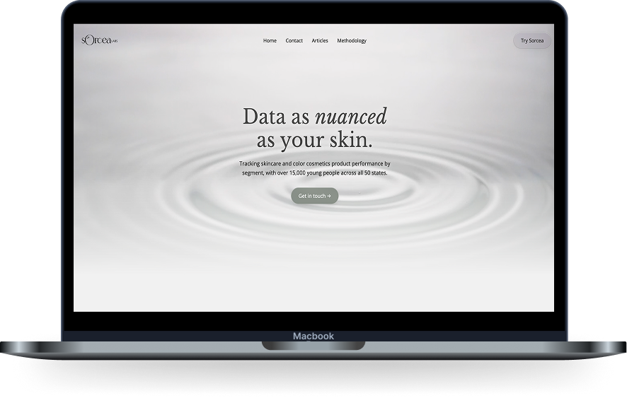
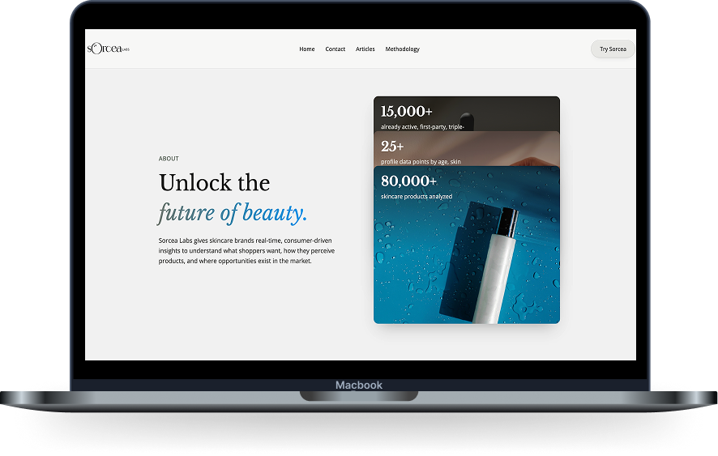
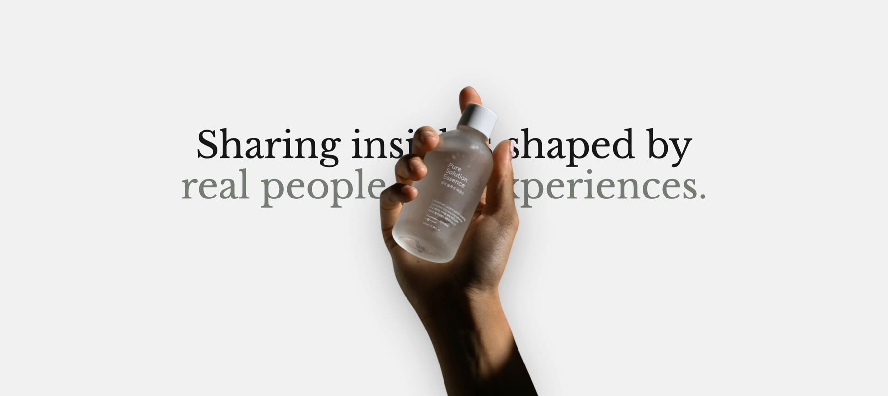
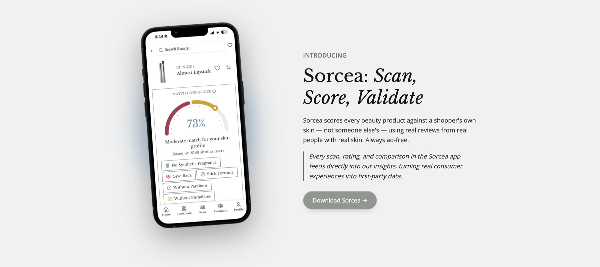

Overview
Sorcea Labs
A skincare market analytics website, redesigned so the data unfolds one scroll at a time.
- Product
- Sorcea Labs is a market analytics company for skincare. It gives brands real-time, consumer-driven insights into what shoppers want, how they perceive products, and where the market has room to grow.
- Challenge
- After the rebrand from SearchOwl, the site needed to earn the trust of beauty partners and feel both tech and beauty driven. The original had no narrative and never connected the two.
*Team from my 2025 internship at Sorcea. This is a revisited, independent redesign.
01 Context
From SearchOwl to Sorcea Labs.
I interned at Sorcea in 2025, when the founders rebranded from SearchOwl to Sorcea Labs. They wanted a site that felt trustworthy, professional, and both tech and beauty driven.
After my internship, I wanted to redesign it again. This time I wanted to consider not only how the site looks, but how it feels as you scroll.

02 Research
What makes a site feel tech or beauty forward?
In my 2025 version, I looked at beauty and tech websites. I did the same again to check what really makes something look tech or beauty forward.
- Beauty
- Soft greens and blues and lighter cream colors help create a beauty narrative.
- Tech
- Numbers and product screens signal technology.
- Scroll
- I also paid attention to how these sites scroll, and how they use progressive disclosure to reveal one idea at a time.
Key insight: Motion worked best when it controlled the pace of information and reduced complexity.
03 Design Approach
Three principles turned one long page into a story.
Reveal, don't overwhelm. Introduce information one idea at a time.
Use motion to guide attention. Movement sets the hierarchy and leads you to the next idea.
Balance movement with restraint. Let one thing move at a time so people can still read.
-
HeroThe promise: data as nuanced as your skin.
-
AboutThe proof: numbers reveal one at a time.
-
Sorcea appThe source: where the data comes from.
-
ArticlesWhy it matters: insights brands can use.
-
Call to actionThe next step: get in touch.
04 Final Experience
Introducing Sorcea Labs.


I mocked it up in Figma, then built the motion through Claude-assisted development. The hardest part was pacing: when to keep scrolling and when to hold.
05 Metrics
What I'd validate.
This is an independent redesign, so I don't have shipped numbers. If it launched, this is what I would measure.
- Comprehension
- Do visitors understand what the product does, and faster?
- Scroll engagement
- Do people keep scrolling through the story, or drop off?
- Accessibility
- Does the reduced-motion version still tell the story?
- Motion value
- Does the animation improve understanding, or only look good?
06 Reflection
Design is more than the screen.
The first time around, I mostly focused on the design itself. As websites have continued to evolve, motion and animation have become a big part of the experience too. That is what motivated me to redesign Sorcea Labs again.
back to top ↑